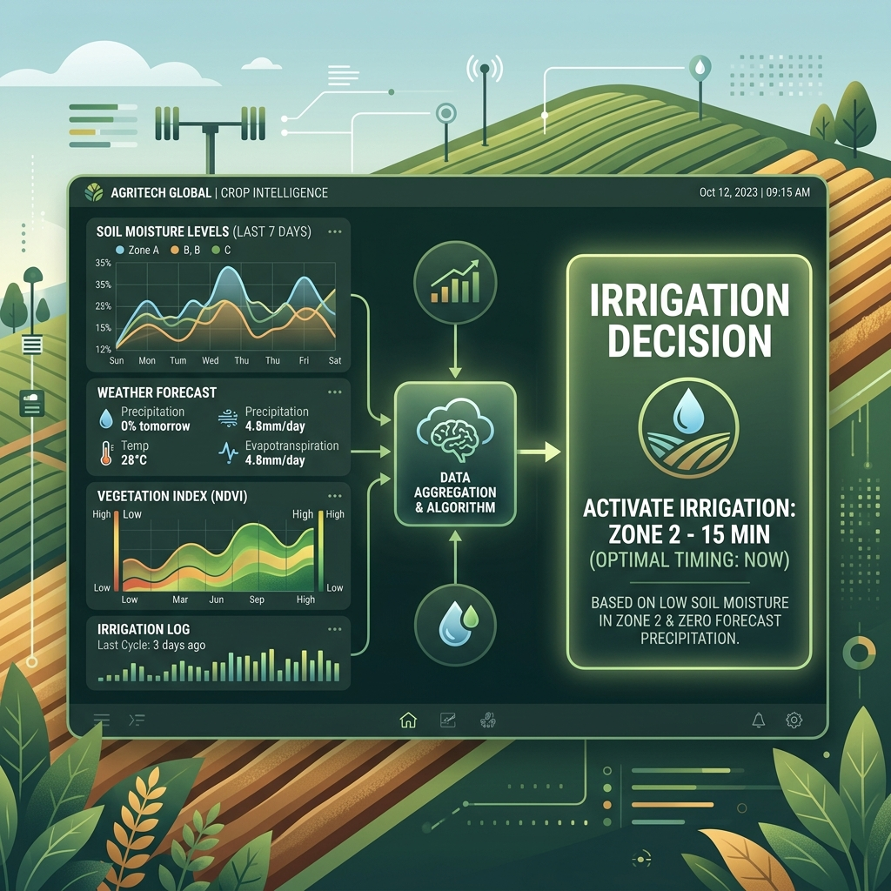

Most smart irrigation systems today operate purely as automation tools. They collect soil moisture data, apply fixed thresholds, and trigger watering. While effective to a point, these systems rely heavily on predefined logic and static assumptions. They ask: "Is the soil dry right now?"
Oriva fundamentally breaks away from this paradigm. It is not designed as a “watering system” but as a decision engine for irrigation. It asks a far more critical question: “What is the optimal irrigation decision over time, considering all variables and uncertainties?”
Dynamic Uncertainty Handling
Traditional systems operate on static triggers. When moisture falls below a threshold, irrigation begins. This reactive model fails to account for the chaotic nature of field conditions.
Oriva, however, is built around dynamic decision-making. Irrigation timing is allowed to shift daily based on evolving conditions such as microclimate variations and crop growth stages. This means:
- It may delay irrigation beyond expected schedules if soil recovery patterns suggest resilience.
- It may recommend irrigation earlier than “safe thresholds” to prevent deep-root stress.
- It adapts continuously rather than just reacting to a single data point.
From Control to Advisory Intelligence
Many systems focus on automating valves. Oriva introduces a human-in-the-loop advisory model. Instead of blindly controlling hardware, it provides recommendations first, allowing farmers to validate decisions. This builds trust gradually—a critical factor in agri-tech adoption where farmers often resist "black-box" decisions.
Time-Based Intelligence vs. Instant Response
Existing systems focus on real-time reaction. Oriva focuses on time-series intelligence. It doesn't just detect dryness; it understands how soil behaves after irrigation, which is far more valuable for long-term field health.
- Soil Trends: Tracking how quickly different zones lose moisture.
- Irrigation Cycles: Analyzing the efficiency of previous watering events.
- Recovery Patterns: Understanding plant stress recovery through soil signatures.
Why This Matters for Modern Farming
This philosophical shift leads to tangible results: better water savings through optimized timing, higher yield consistency, and reduced over-irrigation cycles. Oriva is not just competing in the “automation” category—it is redefining the category as agricultural decision intelligence.